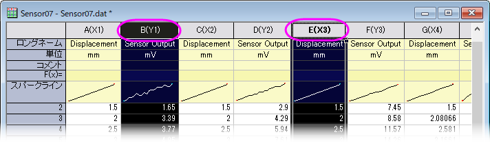

FAQ-484 なぜOriginは列のXY属性を割り当てるのでしょうか、これらをどのように操作したら良いでしょうか?
Col-Types
最終更新日：2020/3/16
各ワークシートの列には、分析を実行または作図するときにデータの扱い方を予め設定する列の属性を含めることができます。列の属性には、X、Y、Z、ラベル、無属性、Xエラー(バー)、Yエラー(バー)、グループ、サブジェクトがあります。列の属性は、列ヘッダで括弧で囲まれて表示されます。
- ワークシートに1つのX列が含まれている場合、Originは、そのX列の右側にあるすべてのY列を関連付けます。したがって、これらのY列を作図用に選択すると、データ範囲選択の一部にX値がなくてもOriginは関連するX列の値を使用してデータプロットを作成します。
- ワークシートに複数のX列がある場合、OriginはX列とY列の間に次のような関連付けを作成します。
- X列の右側にあるすべてのY列（次のX列属性の列まで）は、そのX列に自動的に関連付けられます。Originは、最初のX列をX1とし、その列に関連付けられたY列はY1として属性を表示します。2番目のX列はX2として設定され、関連するY列はY2として設定されます。
- プロット用にY1列が選択されると、自動でX1として指定された列に対するプロットが作成されます。同様に、プロットする際に、Y2 列が選択されていると、結びついているX2列の値を使って、データプロットを行います。
- このX1Y1、X2Y2関連付けには例外が1つあります。単純な2Dグラフを作成する場合、Xが左側にあるかどうかに関係なく、シート上で1つのX列と1つのY列を選択できます（CTRLを押して選択）。これは、シンプルなプロットタイプでのみ機能します。
- 
列を選択し、作図メニューまたはツールバーボタンからグラフタイプを選択すると、列の属性が自動的に使用されます。ワークシートでデータが選択されていない場合は、作図のセットアップダイアログが開きます。作図のセットアップダイアログを使用すると、列属性に関係なく自由にデータを組み合わせてプロットを作成できます。
キーワード: プロット可能, 無属性, エラー, yerr